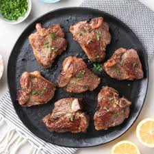

Lambchops Recipe

Description
Lamb Chops have a flavorful garlic and herb crust with a juicy and tender center. These holiday-worthy lamb chops are simple and excellent and wait until you try the easy 2-ingredient pan sauce!
Ingredients
- Lamb rib chops
- Garlic cloves
- Parsley
- Tabsco sauce
- Seasonings
- Chicken Stock
- Butter
Steps
- Thoroughly pat lamb chops dry with paper towels, wiping away any possible bone fragments or shards. Slice between ribs to separate chops, cutting them into even portions (3/4″ to 1″ thick.
- In a measuring cup, stir together garlic, olive oil, parsley, Tabasco, salt, pepper and thyme
- Place chops in a non-reactive casserole dish and pour marinade over the chops. Rub the marinade all over the chops, then cover and refrigerate for at least 1 hour or overnight.
- Remove chops from the refrigerator 30 minutes before cooking. Heat a large heavy pan over high heat. Add 1 Tbsp oil to the hot pan. Add chops and sear for 2-4 minutes per side, depending on the thickness of the chops and desired doneness (see chart below). Sautee in 2 batches if needed.
- Transfer to a platter, tent with foil and rest the lamb chops for 5 minutes while making the pan sauce
- Leave 1 to 2 Tbsp oil in the pan, being careful not to remove the drippings and flavorings. Add 1/2 cup stock and simmer 2 min. Turn off the heat then swirl in butter. Spoon sauce over lamb chops and garnish with chopped parsley if desired.